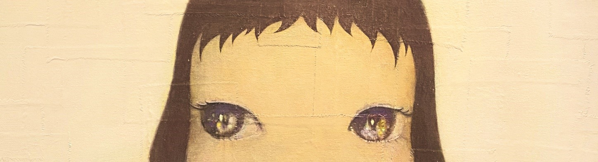
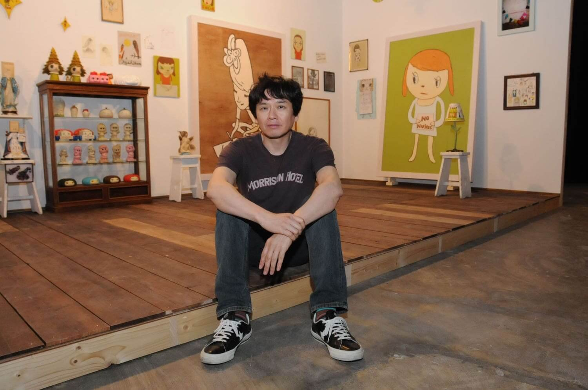
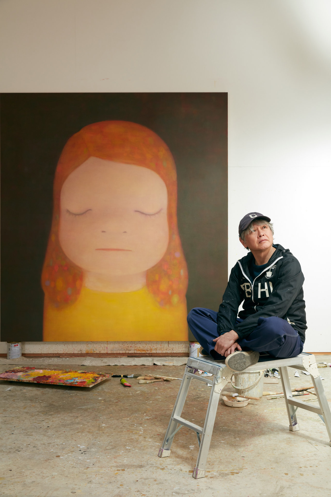

The Artist
Yoshitomo Nara is an internationally renowned contemporary artist. He is known for depicting small children in solitary settings. His aim is to create his works directly and freely so that his works are understood universally.
Unlike other artists who have a consistent creative process, Nara confessed that he does not have a go-to method. In multiple interviews, he has said that he often paints many different images over each other on one canvas until he feels
a connection with one.

It is important to point out that he often uses soft hued pastel colors but also sometimes uses bold, cartoonish lines. The use of the colors give his works a different vibe.

Nara was born in 1959 in the Aomori prefecture in Hirosaki, Japan. Between 1985-1987, he completed a master's degree program at Aichi University of the Arts in Japan. In 1988-1993, he moved to Germany and enrolled at Kunstakademie Düsseldorf, a fine-arts academy. He has displayed lots ofworks in exhibits in various places, like Europe, the United States, and Asia. He currently lives and works in Japan.